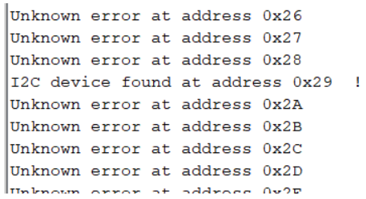

Perform obstacle avoidance with the physical robot using TOF and proximity sensors, on the virtual robot using laser range finder
Materials Used
1 RC Car
1 Artemis Nano
1 USB A/C Cable
2 batteries (car battery, board battery)
1 Sparkfun motor driver
3 Qwiic connectors
2 screwdrivers (flathead and phillips)
1 wire stripper/cutter
1 TOF sensor
1 proximity sensor
Procedure
5A: Obstacle Avoidance on Physical Robot
First, in order to perform obstacle avoidance on the physical robot, I had to parameterize the two sensors: the proximity sensor and the TOF sensor.
Proximity Sensor
The proximity sensor used was the SparkFun VCNL4040 Proximity Sensor. First, I set up the Arduino library, hooked up the sensor via Qwicc connect to the Artemis Nano, and used the example Wire.c to scan the i2c bus for the sensor.
After that, I used the example code in the library AllReadings to map the sensor readings to actual distances. I used 4 objects:
1 Brown Box
1 Box with White Paper taped to it
1 red Sparkfun box
1 black PCB
Noteably, these objects were different colors but also different sizes. The white and brown objects were much larger than the red and brown, and therefore likely blocked out more light. I took measurements with the sensors at several distances to collect meaningful data about the values the sensor would report. I took this data with primarily ambient light from my window. The white paper reflected a lot more light than anything else, as expcted, hence the particularly high value for that data set.
Time of Flight Sensor
First, I hooked up the TOF sensor to the Artemis and scanned the i2c bus, finding the address to be x29 rather than the expected x52. This may be something with dropping the last bit of the address, because 52 and 29 converted to hex differ by only the last bit, which is a zero.

Then, I loaded up the example code to read some data points, and noticed that really close to the sensor, the readings would zero out far before I was actually at the sensor. Therefore, I ran the calibration code with the grey target 5 times, getting offsets of 30, 31, 33, 29, and 31 mm respectively. Therefore, I chose an offset of 31mm. This worked a lot better after again testing with the sensor code.
We found in lab 3 that the robot had an average fast velocity of 2.4 m/s and a stopping distance of around 13 cm, so the robot will need at least .054 seconds to stop or turn around once it encounters an obstacle. Therefore, the total of the intermeasurement period plus the timing budget is required to be 54 ms. The intermeasurement period must be larger than the timing budget, else nothing else can happen in the code because the next measurement will start immediately. Therefore, I would set the intermeasurement period to be 35ms and the timing budget to be 20ms (the minimum).
In order to set the distance mode, I looked at the robot's speed and acceleration. The benefit of the short mode was "better ambient immunity" and of long was "maximum distance". Since the robot can move and accelerate/deccelerate rather quickly, I chose the short mode to better deal with a change in ambient light conditions, as I would be testing this in a place where night vs daytime light makes a big difference.
Next I ran the StatusAndRate example to see what the failure modes could look like when the robot was moving quickly. To test this, I uploaded the code then waved my hand rapidly and chaoticly in front of the sensor, for science. I found that there were occasional errors in the read status such as "Wrapped target fail" and "Signal fail". In the future of motion implementation, I will have to check for these errors and probably disregard certain read test points.
After editing the code to have the proper offset, short mode, and timing settings, I ran the data collection code with four objects the same as for the proximity sensor. Overall the data was very accurate after all these settings were adjusted. As expected based on setting short mode, the sensor was unable to read data past 1.3m, which aligns with the data sheet. In order to account for the repeatability of measurements, I took the average of 50 readings to determine the value for a given distance. There was much less of a variation in readings depending on color and size of objects placed in front of the sensor, which makes it a much more attractive option than the proximity sensor.
On average, sensor inaccuracy was below 5%, however, this was for the average of 50 readings. Individual readings, which will have to be trusted at high speeds, could be off by as much as 30%.
I also used the micros() function to get the time to read sensor data, and got a bimodial distribution at 12.4 and 14.7ms, likely due to the delay(1) millisecond function while waiting for sensor data.
Live Obstacle Avoidance
I combined several previous programs to create an obstacle avoidance plan. First, I loaded up the motor code that had previously had the robot running in a straight line.
Next, I added in the distance sensor functionality, measuring the distance as described in the previous section.
I then created a simple if-else check to see if there was an obstacle in front of the robot, and, if so, to stop spinning the wheels. Here it is on a platform shown by putting my hand in front of it to stop it (this video is kinda bad but every time it stops my hand is going in front of it )
Next I tested it on ground, setting up a 2m test run at a wall. Here is a pic of the setup and the robot running at .75m/s for testing purposes.
Next, I decided to ramp it up! I wanted to find a good balance between speed and distance, and found that a cutoff distance of 250mm and a speed of 160 for the motor driver worked well to stop right up to the wall while going pretty fast before that.
In this video, the robot is going about 2 m/s and stopping right before the wall
At first I was trying to just stop the motors when it reached what it determined to be an obstacle, but found that on my hardwood floors it would sometimes just slide right into the obstacle. Therefore, I ended up turning the motors in the opposite direction for .25 seconds before stopping to really break hard.
5B: Obstacle Avoidance in Simulation
In the VM, I ran the lab5 set up code then opened the simulator and jupyter notebook as described in the lab manual. To do obstacle avoidance, I had to use the laser range finder data mounted to the front of the virtual robot.
Using a simple if/else loop, I measured whether there was a wall in front of the robot, starting with an offset of .5. If there was a wall, I would stop and turn the robot for .1s. If not, I would set a positive velocity for .1 seconds.
After testing this, I found that the major issue occurred when the robot was moving not directly at a wall but not perfectly parallel. The laser range finder had a rather narrow beam, so if a wall was around 10 degrees out of parallel with the robot, the robot would not see it but would crash into it.
In order to address this issue, I increased the distance at which the robot would determine there was a wall in front of it to .7. Essentially, then the robot could measure a hypotenuse rather than the direct perpendicular distance to the wall. This meant the robot couldn't get as close to the wall, but it heavily reduced the number of collisions.
I continued tweaking the values for how long the robot should delay and how long it should turn for, and at what speeds. I found a combination of moving at .5 linear velocity for movement and 2 angular velocity for turns to be the best balance of speed to obstacle avoidance. In reality, I hope that the robot can glance off surfaces at a low enough angle without causing it to stop or flip, although this would not be ideal.
There is a delay of .1s between updates of this function, which will be adjusted as other functions need to occur between measurements. Once the robot is performing other tasks, those other tasks will take some finite amount of time, and that will have to cocur between measurements.
The robot could move faster if this delay was decreased.
As seen in the video, the robot gets very very close, almost touching the wall at one point, before it deflects, not resulting in a collision.
In order to minimize crashes we could move slower, take measurements of wall distance more often, or set a larger distance required between the robot and an obstacle, which would work well in a low-obstacle environment.
def perform_obstacle_avoidance(robot):
while True:
robot.set_vel(0, 0)
if (robot.get_laser_data() < .7):
robot.set_vel(0,2)
time.sleep(.4)
else:
robot.set_vel(.5, 0)
time.sleep(.1)
perform_obstacle_avoidance(robot)